簡単な花のイラストを描く
ここでは回転ツールをつかった、花のイラストの描き方を紹介します。
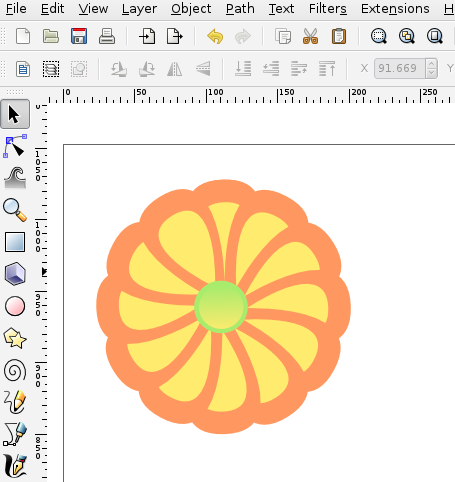
簡単な花のイラスト
始めに左のツールボックスからベジェ曲線のボタンをクリックします。
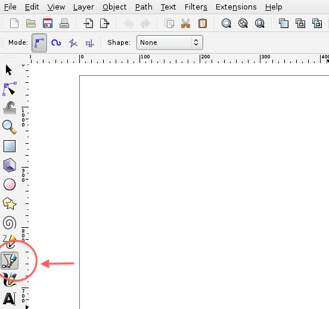
花びらを描くには下図のように１クリックで始点を作る、２ドラッグで丸みももたせ、３始点の場所でもう一度クリックして閉じる以上の３クリックで描けます
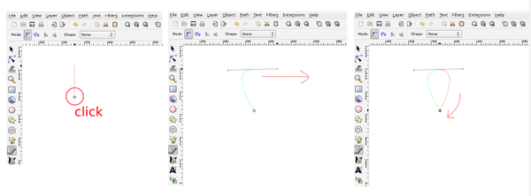
下のカラーパレットから好きな色をつけます。
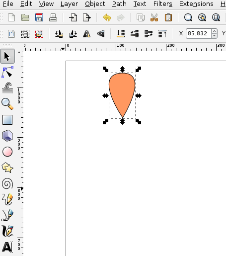
黒線が付いているので、「Fill and Stroke」ボックスから「stroke paint」を選択して、×印をクリックします。
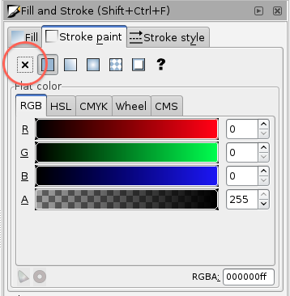
strokeが消えたオブジェクトをcontrol+Dで複製します。
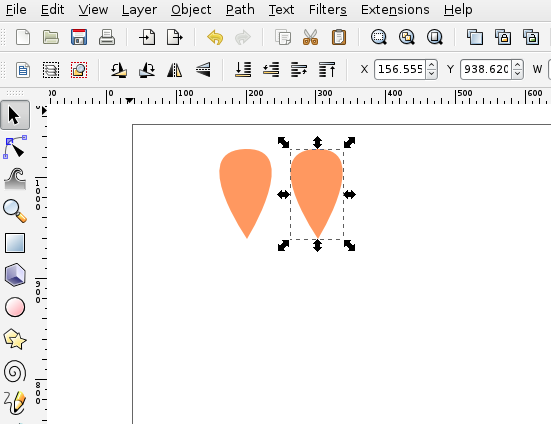
複製したものの色を変え、（ここでは黄色にします）選択したままcontrolを押しながら、もしくは上のバーの鍵マークをクリックして比率を変えずに縮小します。
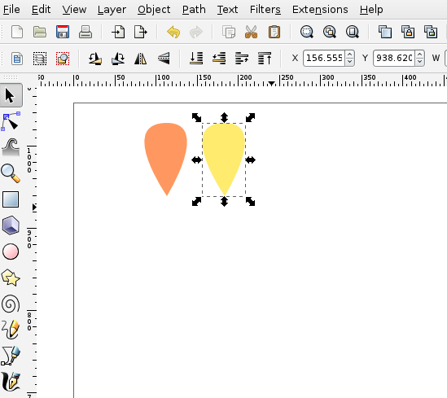
縮小したオブジェクトを重ねると一枚の花びらができます。
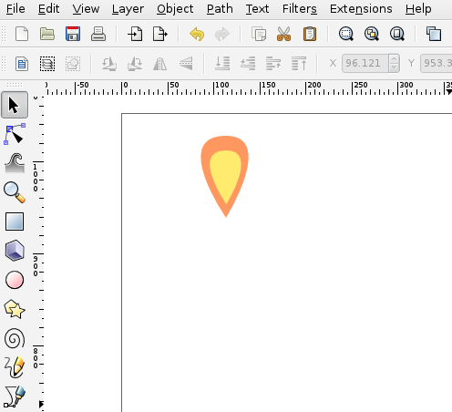
次に、２つのオブジェクトを選択しcontrol+Gでグループ化します。
オブジェクトを全て選択したい場合は選択したいオブジェクトを選択ツールで全て囲むか、選択する物が少ない場合はshihtを押しながら選択すると複数のオブジェクトが選択できます。
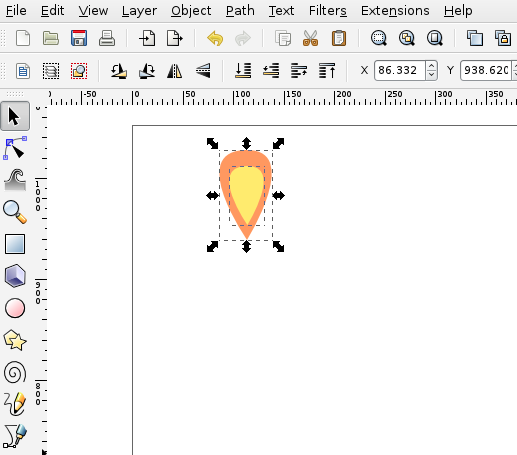
グループ化したオブジェクトを選択したまま「Edit」の「Clone」「Create Tiled Clones…」をクリックします。
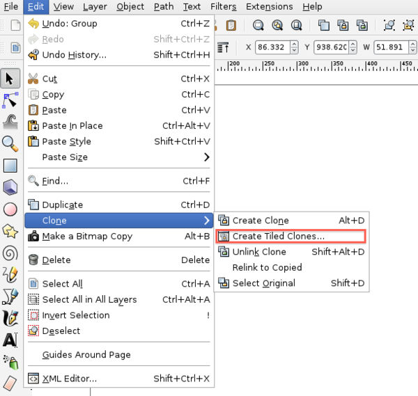
すると下の様なボックスが出てくるので、まず何個クローンを作るか入力します。
「Symmetry」の「Rows,columns」（行、列）を選択し花びらを１２枚作りたいのでcolumnsを「１２」と入力
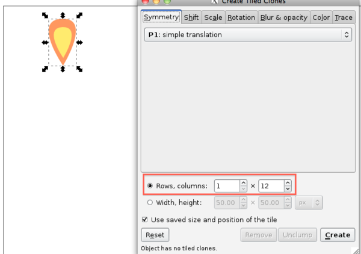
次に「Rotation」（回転）で360°÷12枚なので30°と入力し、30°に１枚クローンがコピーされるよう指示します。
 ここで選択してある状態の花びらをもう一度クリックし、回転軸の「＋」を中心部分に移動させます。
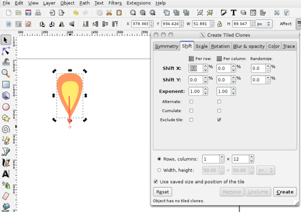
最後に「Shift」の「Exclude tile」の右側の項目をチェックしてCreateをクリック
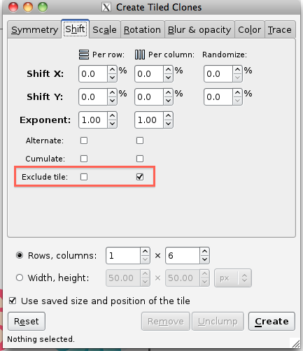
このような花が描けます。
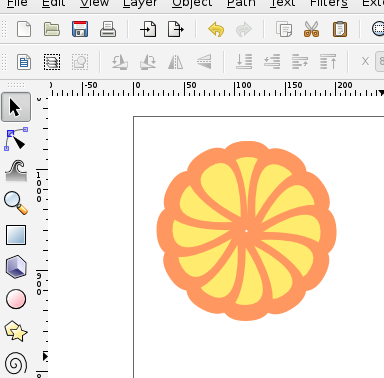
花の中心となる部分の丸を描き、 control+Dでクローンを作って少し縮小さらに「Fill snd stroke」ボックスでグラデーションにします。
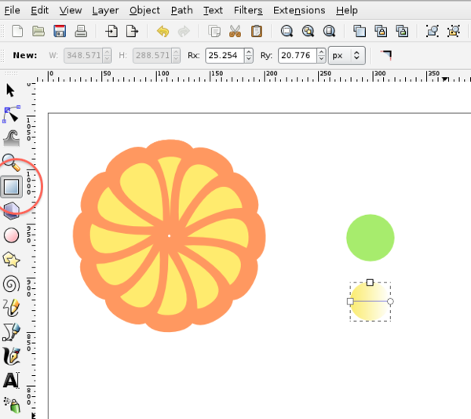
丸を２つ重ね、グループ化して先ほど制作した花びらの中心へ持ってきます。
ここで選択してある状態の花びらをもう一度クリックし、回転軸の「＋」を中心部分に移動させます。
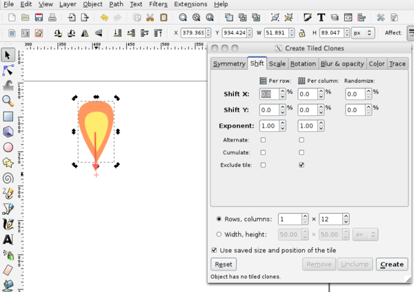
最後に「Shift」の「Exclude tile」の右側の項目をチェックしてCreateをクリック
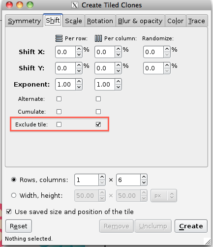
このような花が描けます。
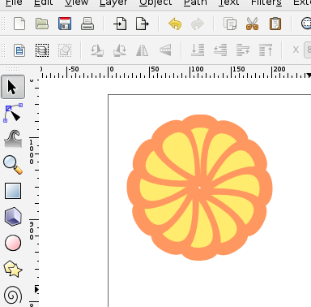
花の中心となる部分の丸を描き、 control+Dでクローンを作って少し縮小さらに「Fill snd stroke」ボックスでグラデーションにします。
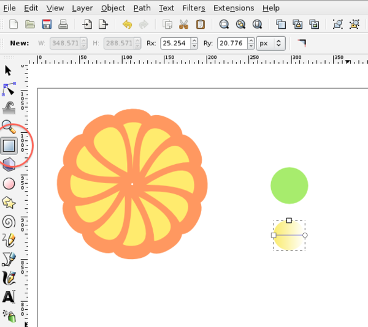
丸を２つ重ね、グループ化して先ほど制作した花びらの中心へ持ってきます。
これで花の完成です。
色を変えたりグラデーションをかけると違った印象の花になります。ちょっとした装飾に使ってみて下さい☆
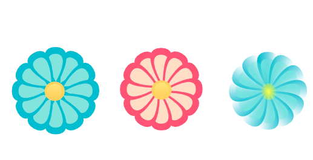